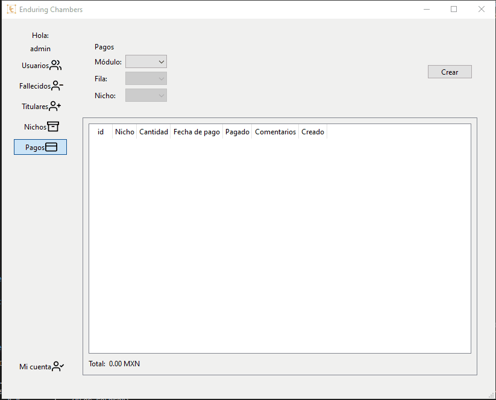
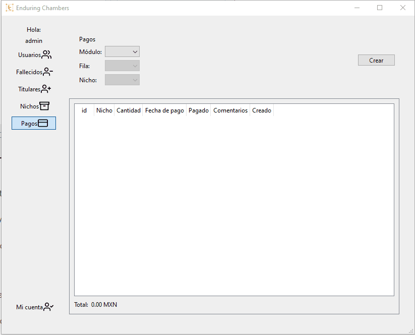
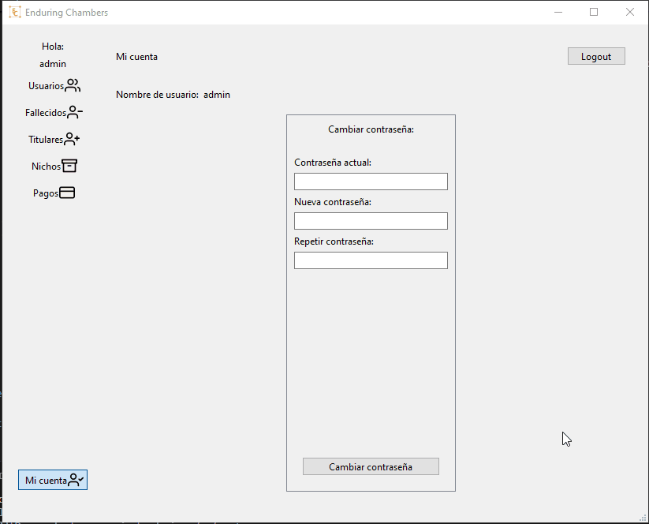
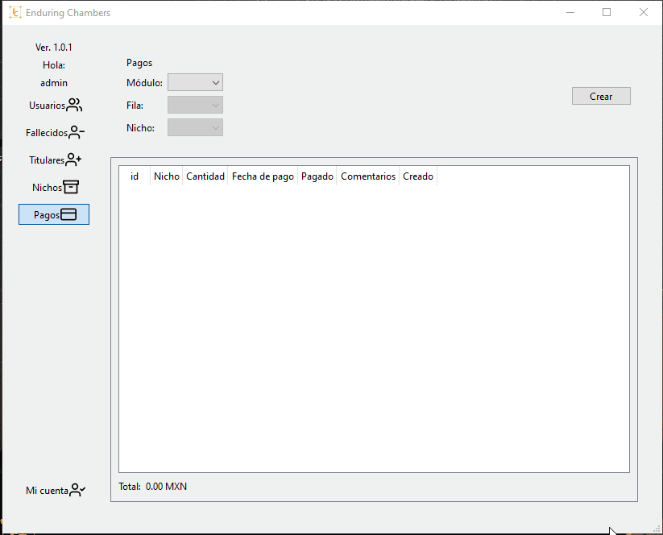
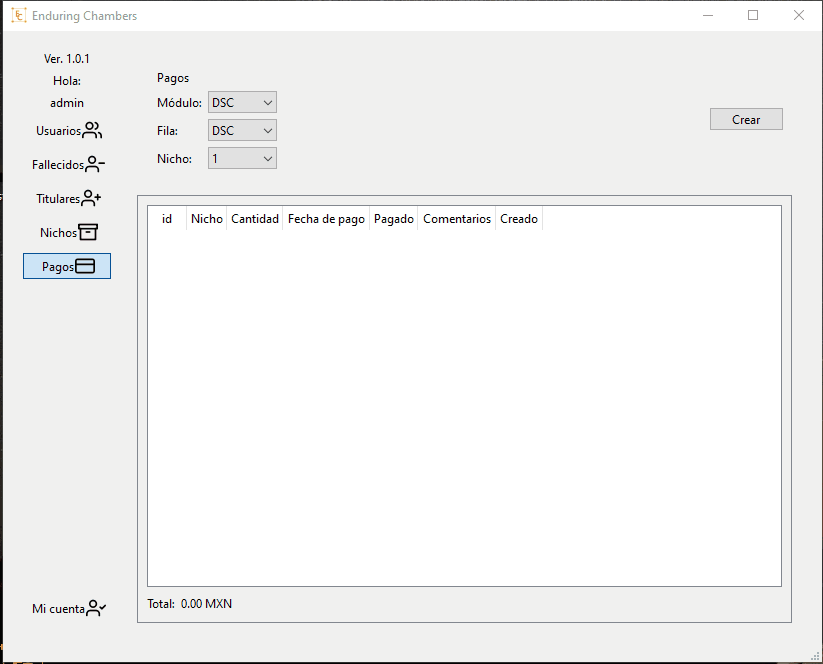
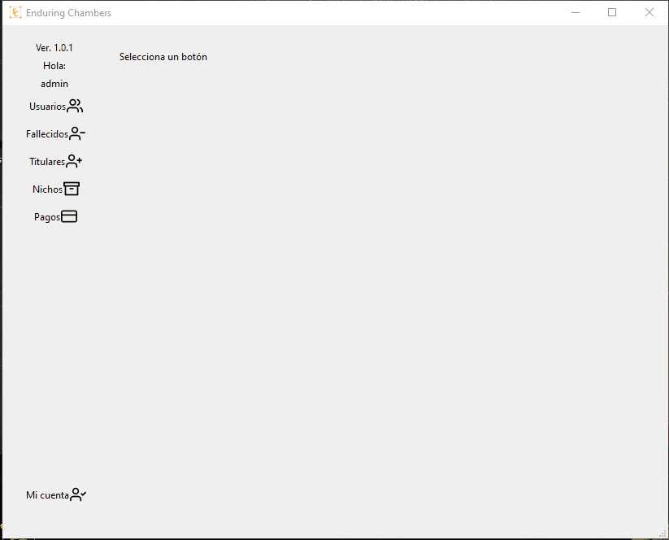
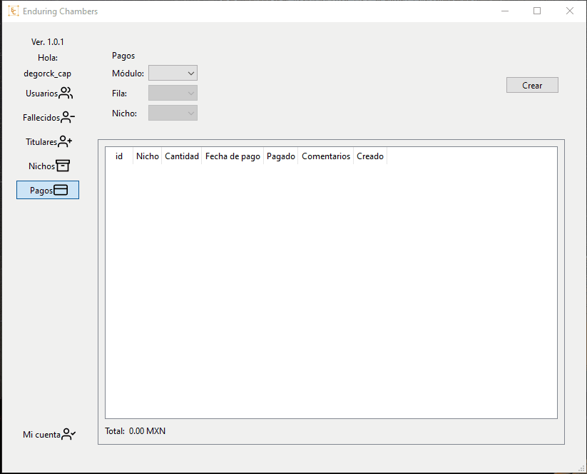
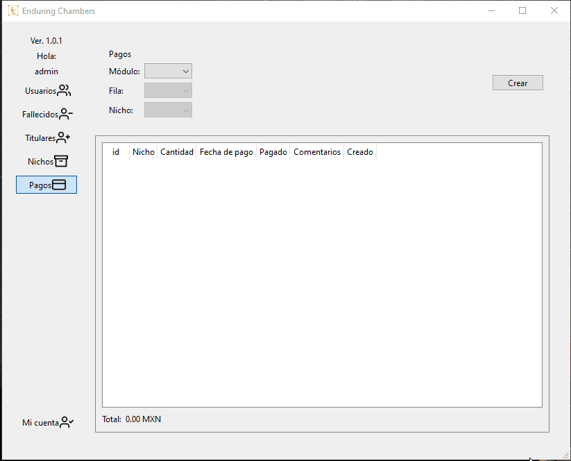
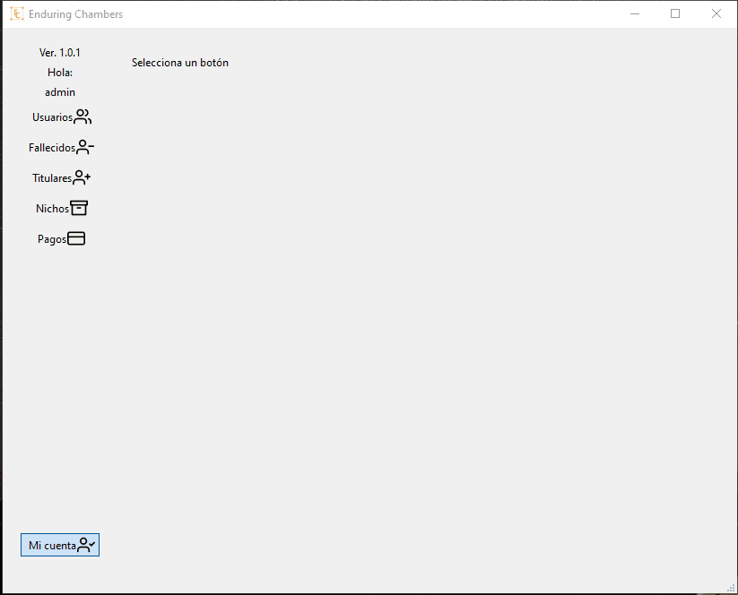
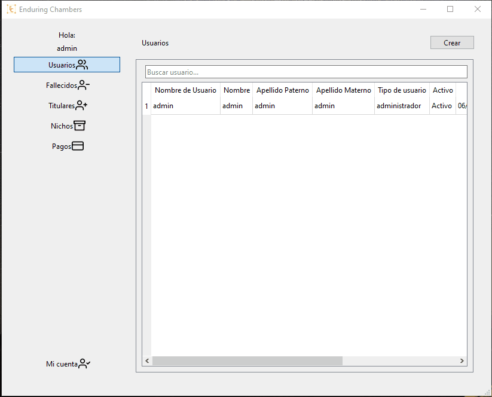

Introducción
Bienvenido al manual de usuario de Enduring Chambers. Este programa está diseñado para ayudarte a gestionar los nichos de la parroquia.
Navegación
Instalación
Existen dos tipos de instalación, la del equipo principal o host, o de un equipo secundario o cliente.
Para el equipo host, usarás en la configuración la palabra localhost.
Para un cliente, usarás en la configuración la ip del host 192.168.x.x.
Para instalar Enduring Chambers, sigue estos pasos:
- Lanza el archivo setup.exe
- Dirígete a la carpeta de instalación de Enduring Chambers, usualmente está ubicada en C:\Program Files (x86)\Parroquia de San Juan Bosco\Enduring Chambers.
- Configura el archivo .env
 Volver al menú
Volver al menú
Usuarios
Existen 3 tipos de usuarios
- Administrador
- Capturista
- Invitado
En los siguientes descripciones, indicaremos qué funcionalidad tiene el sistema. De igual forma indicaremos que tipo de usuario puede realizar la acción, entre corchetes.
Ejemplo:
Crear usuario [Administrador]: aquí indicamos que el administrador tiene la posibilidad de crear un usuario
Los administradores tienen acceso a todo el sistema. Los capturistas tienen acceso a todo tipo de captura. Los invitados tienen una visibilidad limitada de la información del sistema.
Login
Para hacer login, es necesario tener un usuario activo.
- Teclea tu nombre de usuario y contraseña en la ventana de login
- Da click en el botón Login
Para gestionar usuarios, exiten las siguientes funcionalidades:
- Crear usuario [Administrador]
- Modificar usuario [Administrador]
- Activar usuario [Administrador]
- Desactivar usuario [Administrador]
- Búsqueda de usuarios [Administrador, Capturista, Invitado]
Crear usuario [Administrador]
Para crear un usuario:
- Da click en el botón lateral Usuarios
- Da click en el botón Crear, en la esquina superior derecha
- Llena todos los campos (considera que las contraseñas deben tener un mínimo de 10 caracteres)
- Da click en el botón Guardar
Puedes usar el botón Limpiar para borrar toda la información de las cajas de campos e iniciar de nuevo
 Volver al menúModificar usuario [Administrador]
- Da click en el botón lateral Usuarios
- Da doble click en el usuario que deseas modificar
- Modifica los campos del usuario
- Da click en el botón Guardar
Activar usuario [Administrador]
El sistema no permite eliminar usuarios, para mantener la integridad de la información, pero podemos activarlos y desactivarlos:
- Da click en el botón lateral Usuarios
- Da doble click en el usuario que deseas activar
- Da click en el botón Activar
Recuerda que sólo los usuarios activos pueden iniciar sesión
 Volver al menúDesactivar usuario [Administrador]
- Da click en el botón lateral Usuarios
- Da doble click en el usuario que deseas desactivar
- Da click en el botón Desactivar
Recuerda que sólo los usuarios activos pueden iniciar sesión
Volver al menúBúsqueda de usuarios [Administrador, Capturista, Invitado]
Para realizar una búsqueda detallada de un usuario, utiliza la barra de búsqueda:
- Da click en el botón lateral Usuarios
- Ingresa el nombre de usuario en la barra de búsqueda
El usuario Administrador, puede ver todos los usuarios. Los usuarios Capturista, Invitado, sólo observarán los usuarios activos.
 Volver al menúFallecidos
Para gestionar fallecidos, exiten las siguientes funcionalidades:
- Crear fallecido [Administrador, Capturista]
- Modificar fallecido [Administrador, Capturista]
- Activar fallecido [Administrador]
- Desactivar fallecido [Administrador]
- Búsqueda de fallecidos [Administrador, Capturista, Invitado]
Crear fallecido [Administrador, Capturista]
- Da click en el botón lateral Fallecidos
- Da click en el botón Crear, en la esquina superior derecha
- Ingresa los datos del fallecido
- Da click en el botón Guardar
Puedes usar el botón Limpiar para borrar toda la información de las cajas de campos e iniciar de nuevo.
Considera, que sólo verás disponibles en la lista de nichos, aquellos nichos que no están ocupados y que están activos.
Una vez que guardes un nuevo fallecido, el estado del nicho pasará a estar ocupado.
Modificar fallecido [Administrador, Capturista]
- Da click en el botón lateral Fallecidos
- Da doble click en el fallecido que deseas modificar
- Modifica los datos del fallecido
- Da click en el botón Guardar
Activar fallecido [Administrador]
El sistema no permite eliminar fallecidos, para mantener la integridad de la información, pero podemos activarlos y desactivarlos:
- Da click en el botón lateral Fallecidos
- Da doble click en el fallecido que deseas activar
- Da click en el botón Activar
El usuario Administrador puede ver todos los fallecidos. Los usuarios Capturista, Invitado, solo observarán los fallecidos activos.
 Volver al menúDesactivar fallecido [Administrador]
- Da click en el botón lateral Fallecidos
- Da doble click en el fallecido que deseas desactivar
- Da click en el botón Desactivar
El usuario Administrador puede ver todos los fallecidos. Los usuarios Capturista, Invitado, solo observarán los fallecidos activos.
 Volver al menúBúsqueda de fallecidos [Administrador, Capturista, Invitado]
Para realizar una búsqueda detallada de un fallecido, utiliza la barra de búsqueda:
- Da click en el botón lateral Fallecidos
- Ingresa el nombre de fallecido en la barra de búsqueda
El usuario Administrador, puede ver todos los fallecidos. Los usuarios Capturista, Invitado, sólo observarán los fallecidos activos.
 Volver al menúTitulares
Para gestionar titulares, exiten las siguientes funcionalidades:
- Crear titular [Administrador, Capturista]
- Modificar titular [Administrador, Capturista]
- Activar titular [Administrador]
- Desactivar titular [Administrador]
- Búsqueda de titulares [Administrador, Capturista, Invitado]
Crear titular [Administrador, Capturista]
- Da click en el botón lateral Titulares
- Da click en el botón Crear, en la esquina superior derecha
- Ingresa los datos del titular
- Da click en el botón Guardar
Puedes usar el botón Limpiar para borrar toda la información de las cajas de campos e iniciar de nuevo.
 Volver al menúModificar titular [Administrador, Capturista]
- Da click en el botón lateral Titulares
- Da doble click en el titular que deseas modificar
- Modifica los datos del titular
- Da click en el botón Guardar
Activar titular [Administrador]
El sistema no permite eliminar titulares, para mantener la integridad de la información, pero podemos activarlos y desactivarlos:
- Da click en el botón lateral Titular
- Da doble click en el titular que deseas activar
- Da click en el botón Activar
El usuario Administrador puede ver todos los titulares. Los usuarios Capturista, Invitado, solo observarán los titulares activos.
 Volver al menúDesactivar titular [Administrador]
- Da click en el botón lateral Titular
- Da doble click en el tiitular que deseas desactivar
- Da click en el botón Desactivar
El usuario Administrador puede ver todos los titulares. Los usuarios Capturista, Invitado, solo observarán los titulares activos.
 Volver al menúBúsqueda de titulares [Administrador, Capturista, Invitado]
Para realizar una búsqueda detallada de un titular, utiliza la barra de búsqueda:
- Da click en el botón lateral Titulares
- Ingresa el nombre de titular en la barra de búsqueda
El usuario Administrador, puede ver todos los titulares. Los usuarios Capturista, Invitado, sólo observarán los titulares activos.
Volver al menúMódulos
Para gestionar módulos, exiten las siguientes funcionalidades:
- Crear módulo [Administrador]
- Modificar módulo [Administrador]
- Activar módulo [Administrador]
- Desactivar módulo [Administrador]
Crear módulo [Administrador]
- Da click en el botón lateral Nichos
- Da click en el botón Módulos, en la esquina superior derecha
- Da click en el botón Crear, en la esquina superior derecha
- Escribe el nombre del módulo
- Da click en el botón Guardar
Modificar módulo [Administrador]
- Da click en el botón lateral Nichos
- Da click en el botón Módulos, en la esquina superior derecha
- Da doble click en el módulo que deseas modificar
- Escribe el nuevo nombre del módulo
- Da click en el botón Guardar
Activar módulo [Administrador]
- Da click en el botón lateral Nichos
- Da click en el botón Módulos, en la esquina superior derecha
- Da doble click en el módulo que deseas activar
- Da click en el botón Activar
Recuerda que sólo los administradores puede ver los módulos inactivos.
Volver al menúDesactivar módulo [Administrador]
- Da click en el botón lateral Nichos
- Da click en el botón Módulos, en la esquina superior derecha
- Da doble click en el módulo que deseas desactivar
- Da click en el botón Desactivar
Recuerda que sólo los administradores puede ver los módulos inactivos.
Volver al menúFilas
Para gestionar filas, exiten las siguientes funcionalidades:
- Crear fila [Administrador]
- Modificar fila [Administrador]
Crear fila [Administrador]
- Da click en el botón lateral Nichos
- Da click en el botón Filas, en la esquina superior derecha
- Selecciona el módulo donde necesitas crear la fila
- Da click en el botón Crear, en la esquina superior derecha
- Escribe el nombre de la fila
- Da click en el botón Guardar
Modificar fila [Administrador]
- Da click en el botón lateral Nichos
- Da click en el botón Filas, en la esquina superior derecha
- Selecciona el módulo de la fila que deseas modificar
- Da doble click en la fila que deseas modificar
- Escribe el nuevo nombre de la fila
- Da click en el botón Guardar
Nichos
Para gestionar nichos, exiten las siguientes funcionalidades:
- Crear nicho [Administrador]
- Modificar nicho [Administrador]
- Activar nicho [Administrador]
- Desactivar nicho [Administrador]
- Búsqueda de nichos [Administrador, Capturista, Invitado]
Crear nicho [Administrador]
- Da click en el botón lateral Nichos
- Selecciona el módulo donde necesitas crear el nicho
- Selecciona la fila donde quieres crear el nicho
- Da click en el botón Crear, en la esquina superior derecha
- Llena los campos necesarios
- Da click en el botón Guardar
En la sección de crear nicho, podrás observar el valor del nombre del último nicho creado. Captura un identificador para el nuevo nicho
que sea consecutivo a este registro.
Ejemplo:
Si observas el valor de la sección de crear nicho, el valor de ultimo registro es 1, guarda como nombre el valor 2.
En caso de no tener registro previos, se verá en la sección el valor No existen registros.
Modificar nicho [Administrador]
- Da click en el botón lateral Nichos
- Realiza la búsqueda del nicho que deseas modificar
- Da doble click en el nicho que deseas modificar
- Escribe los nuevos valores para el nicho
- Da click en el botón Guardar
 Volver al menú
Volver al menú
Activar nicho [Administrador]
- Da click en el botón lateral Nichos
- Realiza la búsqueda del nicho que deseas activar
- Da doble click en el nicho que deseas activar
- Da click en el botón Activar
Desactivar nicho [Administrador]
- Da click en el botón lateral Nichos
- Realiza la búsqueda del nicho que deseas desactivar
- Da doble click en el nicho que deseas desactivar
- Da click en el botón Desactivar
Búsqueda de nichos [Administrador, Capturista, Invitado]
- Da click en el botón lateral Nichos
- En la barra de busqueda, escribe el nombre del nicho
Las combo box de Nicho y Módulo se pueden utilizar como filtros durante la búsqueda. Si no seleccionas algún filtro, se realizará la busqueda de todos los nichos.
 Volver al menúPagos
Para gestionar pagos, exiten las siguientes funcionalidades:
- Crear pago [Administrador, Capturista]
- Modificar pago [Administrador]
Crear pago [Administrador, Capturista]
- Da click en el botón lateral Pagos
- Seleccina el modulo donde se encuentra el nicho para el que deseas crear el pago
- Selecciona la fila donde se encuentra el nicho para el que deseas crear el pago
- Selecciona el nicho para el que deseas crear el pago
- Da click en el botón Crear
- Captura los datos del pago
- Da click en el botón Guardar
Podras observar la suma de todos los pagos en la sección inferior.
Si seleccionas el checkbox Pagado, el estado del pago del nicho pasará a Pagado.
Así que sólo selecciona este checkbox si el nicho ya será liquidado con este pago.
Modificar pago [Administrador]
- Da click en el botón lateral Pagos
- Realiza la búsqueda del pago que deseas modificar
- Da doble click en el pago que deseas modificar
- Da click en el botón Guardar
Mi cuenta
Para gestionar su cuenta, exiten las siguientes funcionalidades:
- Cambiar contraseña [Administrador, Capturista]
- Logout [Administrador, Capturista, Invitado]
Cambiar contraseña [Administrador, Capturista]
- Da click en el botón lateral Mi cuenta
- Escribe tu contraseña anterior
- Escribe tu contraseña nueva
- Repite tu contraseña
- Da click en el botón Cambiar contraseña
Logout [Administrador, Capturista, Invitado]
- Da click en el botón lateral Mi cuenta
- Da click en el botón Logout